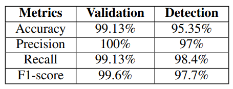

Detecting Smart Home Device Activities Using Packet-level Signatures from Encrypted Traffic
Abstract
Despite the significant benefits of the widespread adoption of smart home Internet of Things (IoT) devices, these devices are known to be vulnerable to active and passive attacks. Existing literature has demonstrated the ability to infer the activities of these devices by analyzing their network traffic. In this study, we introduce a packet-based signature generation and detection system that can identify specific events associated with IoT devices by extracting simple features from raw encrypted network traffic. Our approach addresses limitations in existing state-of-the-art techniques, which rely on specific packet intervals. Our proposed approach is not interval dependent rather, it automatically identifies the specific threshold of packets to consider to generate a unique signature and, thus, is more resilient to network jitters. Furthermore, we evaluate the effectiveness, uniqueness, and correctness of our signatures by training and testing our system using four public datasets. During this evaluation, we not only verify known signatures but also identify new ones. Additionally, our system achieves an average recall and precision of 98-99% and 98-100%, respectively, highlighting both the effectiveness of our approach and the feasibility of using packet-level signatures in detecting user activities of IoT devices.
System Architecture
Our system includes three key stages:- Input processing
- Training
- Activity detection

Stage-1: Input Processing
At first, we take a device’s event types & triggered events of that type as input. For convenience, we consider each event type as a decimal number.Stage-2: Training
Data Collection.To collect a training set, we first start tcpdump on the router’s local interfaces and start the script. Then, we terminate tcpdump after the nth event has been issued.
Trace Filtering.TWe filter the collected raw training set (a set of pcap files and event timestamps) to discard unrelated traffic. We discard the packets where neither the source nor destination IP matches. Also, the packets beyond the number of packets n (a threshold described later on) after each timestamped event are discarded.
Pair Clustering. In this step, we separate relevant packet pairs (i.e., those that consistently occur after an event) from irrelevant ones. Since we do not know in advance the packet lengths in pairs, an unsupervised learning algorithm: DBSCAN (Density-based Spatial Clustering of Applications with Noise) is used.
Signature Creation. Signatures in this paper are identified based on only two parameters: packet-length and direction. To create a signature, we concatenate packet pairs in the clusters to reassemble the longest packet sequences possible. Packet pairs in clusters x and y are concatenated if, and only if, for each packet pair px in x, there exists a packet pair py in y such that px and py occurred consecutively in the same TCP connection. If there are more pairs in y than in x, the extra pairs in y are discarded. Finally, this system sorts the sets of packet sequences based on the total number of packets to form a list of packet sequence sets.
Signature Validation.The validation of the signatures is
done by running the detection algorithm at layer-3 using the
dataset on which signatures are created. If the system detects
at most n events, and the timestamps of detected events match
the timestamps for events recorded during training, then the
signature is finalized as a valid packet-level signature.
Stage-3 (Activity Detection):
Detection is done on independent datasets from which we did not generate signatures. We treat a network trace as a stream of packets. Each individual packet is presented to a set of state machines. A state machine is maintained for each packet sequence of the signature for each flow. A state machine advances to its next state if the packet matches the next packet in the modeled packet sequence. Heuristic is used here too.Dataset Used
- Pingpong
- UNSW
- YourThings
- Mon(IoT)r
Examples of Signature
We identify signatures based on only two parameters: packet-length and direction. For the Sengled bulb, we do not observe any pattern in its own communication. However, for ON events, the controlling smartphone always sends a request packet of length 211 bytes to an Internet host and receives a reply packet of length 1063 bytes. For OFF, these packets are of the same lengths. We observe an exchange of TLS Application Data packets between the Amazon plug and an Internet host where the packet lengths are 1099 bytes and 235 bytes when the plug is ON. For OFF events, we find consistently occurring packet pairs in the plug’s communication with two different Internet hosts where the lengths of the reply packets are the same; but for the requests packets, the lengths are different. Similarly, for the TP-Link bulb, we observe that smartphone sends a request packet to the device with the same lengths of packets for both events, and the reply packets from the device are of lengths 227 bytes and 244 bytes for corresponding events. Thus, this request-reply pattern can occur in the communication of any of the three pairs: Phone-Device, Device-Cloud, or Phone-Cloud.Results Summary
We have explored and designed how encrypted traffic from IoT devices can be used to infer sensitive information, such as, events of those devices and sensors. Specifically, we have implemented a methodology (a packet-based signature generation, validation and detection system) for automatically extracting packet-level signatures for smart home device events from their network traffic. We have identified some new packet-level signatures that were not previously known. Then, through experimental evaluations based on a wide range of different IoT devices from a real smart home environment, we have demonstrated that our system is able to accurately unveil IoT device activities from raw network traffic logs with an average recall of 98∼99% . Finally, we have evaluated the uniqueness of the generated signatures by performing signature detection on different independent dataset and the results were much satisfactory. Through these efforts, we have demonstrated the effectiveness of our system to detect user activities of IoT devices.
This research presents a system which is capable of detecting user activities of heterogeneous IoT devices with the help of packet-level signatures extracted from both unencrypted and encrypted network traffic. Our system successfully overcomes some limitations of the existing system as described previous chapters. However, IoT traffic analysis and user activity detection is a vast area of research and different ideas are still needed to study and implement in this sector. Our contribution of “packet-based signature generation & detection” can be combined with these new ideas and we believe that it will increase the accuracy of any IoT user activity detection system tremendously.
Contributions
We introduce a packet-based signature generation and detection system that does not consider a temporal threshold and can efficiently handle both binary and multitype events. Our system overcomes these limitations as we experiment with a diverse range of smart home devices and use only the packet length and direction for a specific number of packets, simplifying the detection technique and achieving higher recall and precision rates. We make the following contributions:- To generate and detect packet-level signatures, we devise a threshold on the number of packets to consider for the signature rather than depending on a specific time interval. As time-based signature generation and detection can be easily manipulated by slowing down or speeding up the traffic rate, existing works are less effective across different datasets. Our proposed approach is less prone to temporal fluctuations caused by network jitters.
- To the best of our knowledge, we have obtained the highest average recall and precision of 98−99% and 98−100%, respectively, for any packet-level signature detection system to date. We will also open-source our codebase for the research community.
- Our automated signature generation process captures new signatures from existing datasets, further verified through cross-data validations. Thus, signatures can be generated for both binary-type and multi-type events in an automated and systematic way without prior knowledge of the device’s behavior.